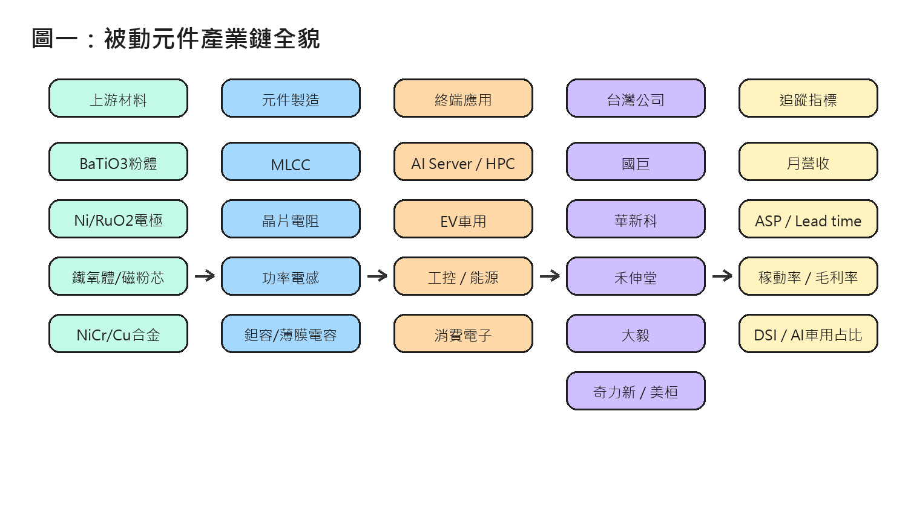
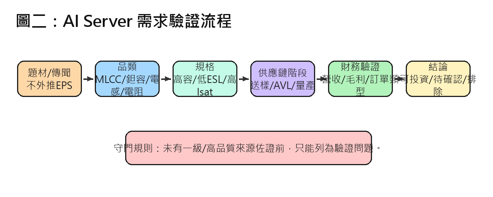
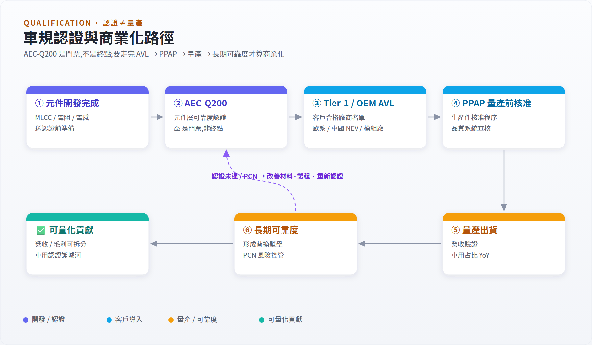
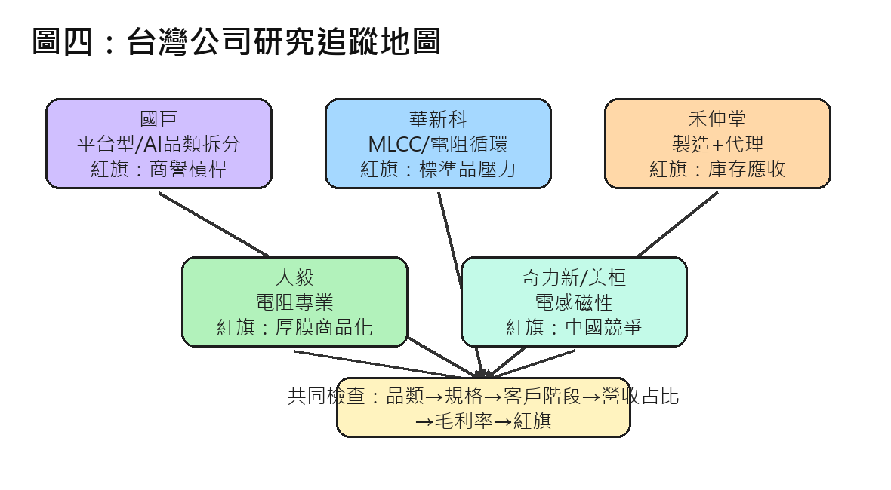
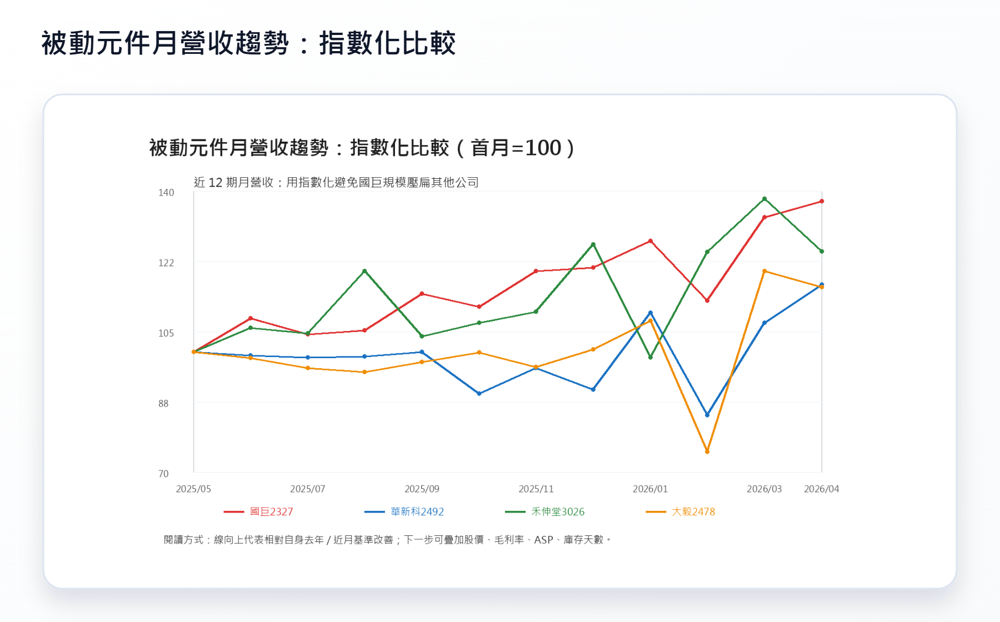
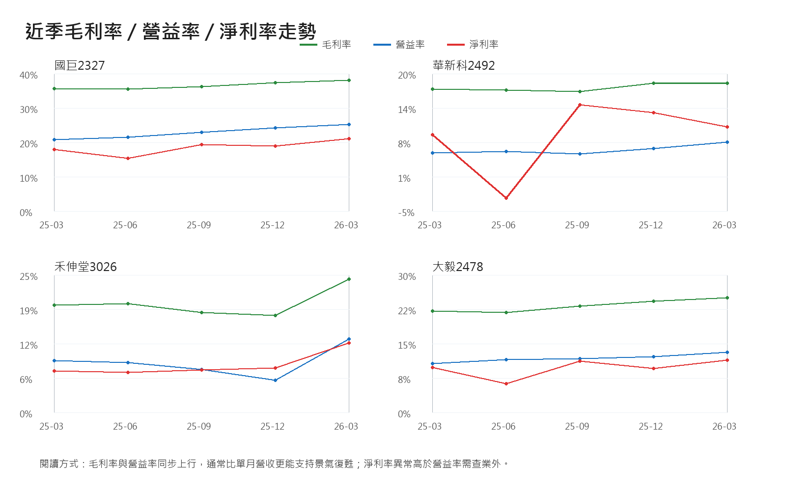
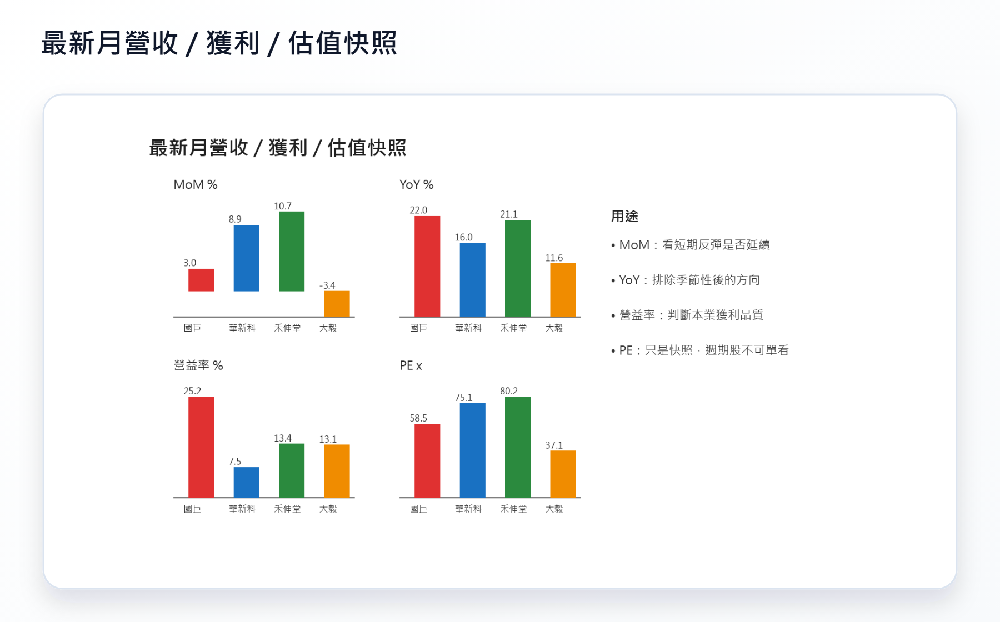

被動元件研究結構圖與決策地圖¶
本頁是被動元件研究的「先看圖」版本。先用圖建立全貌；需要完整文字脈絡時，再回到 被動元件產業研究總覽 與 月度追蹤表。
如何閱讀¶
- 圖一：先定位產業鏈，從材料、元件、應用、公司到追蹤指標。
- 圖二：把 AI server 題材轉成驗證流程，避免直接外推 EPS。
- 圖三：把車規從「認證」拆成 AVL、PPAP、量產與可靠度。
- 圖四：把五家台廠放到同一張公司追蹤地圖。
圖一：被動元件產業鏈全貌¶

閱讀重點：上游材料與製程決定規格與良率；元件品類決定終端應用；應用再對應到台廠曝險；最後用月營收、ASP / lead time、稼動率、毛利率、DSI 與 AI / 車用占比追蹤。
圖二：AI Server 需求驗證流程¶

閱讀重點：AI server 不是直接等於投資結論。必須逐步確認品類、規格、供應鏈階段、營收占比、毛利率與訂單類型。未確認者應停留在「待確認清單」。
圖三：車規認證與商業化路徑¶

閱讀重點：AEC-Q200 是門票，不等於量產。真正商業化需要 Tier-1 / OEM AVL、PPAP、量產出貨與長期可靠度紀錄。BMS、OBC / DC-DC、Inverter、ADAS 的元件需求也不同。
圖四：台灣公司研究追蹤地圖¶

閱讀重點：五家台廠的研究問題不同，但共同檢查順序一致：品類 → 規格 → 客戶階段 → 營收占比 → 毛利率 → 紅旗。
新增資料型圖表：營收、獲利率與估值快照¶
除了原本的研究框架圖，最適合優先圖示化的是「可每月/每季更新」的資料序列。以下先放三張核心追蹤圖：
圖五：月營收指數化折線圖¶

閱讀重點：國巨規模遠大於其他公司，直接畫絕對營收會壓扁小公司；因此本圖先用「首月 = 100」指數化，比較各家公司相對自身的改善幅度。
圖六：近季毛利率 / 營益率 / 淨利率走勢¶

閱讀重點：毛利率與營益率同步上行，比單月營收更能支持景氣復甦；若淨利率異常高於營益率，需回到財報檢查業外損益。
圖七：最新月營收 / 獲利 / 估值快照¶

閱讀重點：用 MoM、YoY、營益率與 PE 做快速比較，但週期股不可單靠 PE 判斷便宜或昂貴，需搭配景氣位置與正常化 EPS。
後續仍可圖示化的清單¶
- 月營收折線圖：已完成第一版；後續可拉長到 24–36 個月，並疊加股價或相對強弱。
- 毛利率 / 營益率趨勢圖：已完成第一版；後續可補國巨、華新科、禾伸堂、大毅更長季度序列。
- ASP / Lead time 雙軸圖：目前缺資料來源；適合用 TrendForce、通路報價、法說文字補齊。
- 庫存天數 DSI 與營收 YoY 對照圖：用來判斷補庫存是真復甦還是假復甦。
- 稼動率 vs. 毛利率散點圖：用來觀察被動元件營運槓桿。
- AI / 車用 / 工控營收占比堆疊圖：用來檢查高階產品 mix 是否真的提升。
- 估值區間圖：P/B、EV/EBITDA 或正常化 EPS 區間，比單期 PE 更適合週期股。
後續使用方式¶
- 投資研究：先看圖二與圖四，建立公司追問清單。
- 產業研究：先看圖一與圖三，拆解產品、規格與認證壁壘。
- 月度追蹤：把圖一最後一欄的指標接回 被動元件景氣循環與追蹤框架。